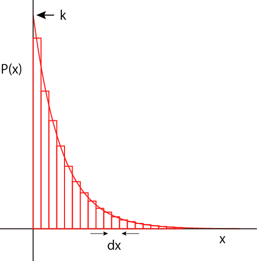
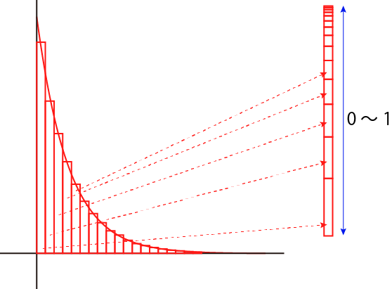

ランダムな数の発生方法-02
１．基本的な考え方
まず，対象となる値がある分布をしているとしましょう．
ここでは，指数分布を用意しました．
縦軸は存在確率なので，すべての和が１となるように規格化されています．
つまり，これは，あるｘのときの存在確率が，P(x)である． これをdxという幅を考えると，

の短冊の総面積がすべてのｘの事象が起こる確率です（＝１）
つまり，あるx+dxがおこる確率は，すべての確率のうちのx+dxの短冊の割合なので，全部の短冊の和のうちのx+dxの短冊の割合が起こりえる確率となります．

従って，この関数の最小値からｘまでの累積積分が，ｘがおこる確率となります．
では，具体的な分布を考えていきましょう．